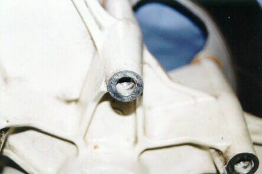
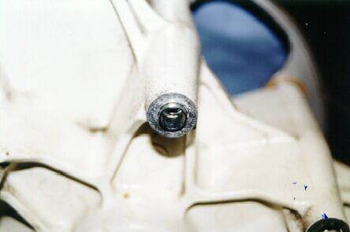
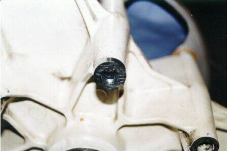
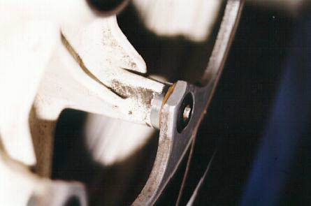
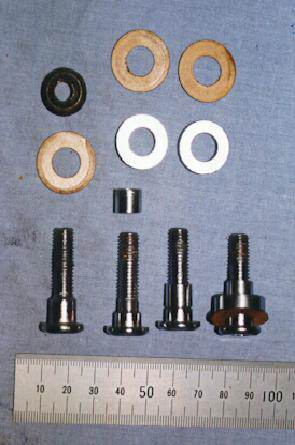
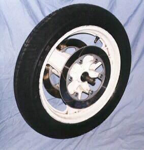
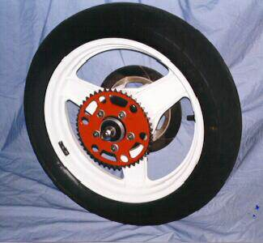
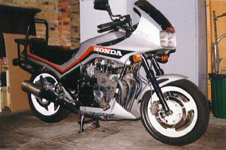

Photographs, text and words by Mr_T, pictures scanned and massaged by Viking.
First, a quote from John Robinson in his “Motorcycle Tuning: Chassis” book:
“The wheels and various things attached to them are critical to the bike’s performance. The masses of these parts have rotating inertia which has to be increased or decreased whenever the bike is accelerated or braked: it is unsprung mass, and therefore governs how the suspension performs; it is steered mass which affects the steering response and creates gyroscopic forces which interact with the steering. Every pound of material carried on the wheels is worth two to five pounds carried elsewhere on the bike”
Why Comstars?
The Comstar wheels fitted to the RC17 are a combination of rolled sheet alloy and a cast alloy hub. The rim is attached to six sheet alloy “spokes” with 12 rivets. The spokes are attached to the hub with six special-headed nuts and bolts to reduce tampering.
Comstars of various sizes were fitted to many different Hondas, from CB250s to the CB1100Rs, before the one piece cast alloy wheels that we take for granted today were common. Comstars are very similar in concept to the UK made “Astralite” wheels of the 1980’s. Which came first? I don’t know, but it would be interesting to know.
The Comstar has some advantages over conventional spoked wheels:
- Less individual bits to assemble at the factory
- Handle tubeless tyres
- Don’t lose spoke adjustment
- Fairly stiff for their mass
Why RC24 one-piece cast alloys instead?
The one-piece wheels are an integrated structure, there are no rivetted or bolted joins so the spokes and the rims are more stiffly connected to the hub. All of the braking, accelerating and cornering forces are more widely distributed over the hub/spoke join.
I chose the 1986 RC24 wheels because their rim diameters and tyre sizes are compatible with the RC17. As well, the disc flange dimensions are the same so my RC17 discs bolt straight on to the RC24 flanges, front and back. The RC24 uses the same wheel bearings, and the RC17 sprocket carrier drops straight in, cushions and all.
Apart from that, I’ve measured the RC24 wheels to be a bit lighter than the Comstars they replace, which would result is some small performance benefits. The front wheel is about 4.4kg – about 0.2kg less than the front Comstar. The rear wheel is about 6.1kg – about 0.4kg less than the original Comstar. That doesn’t sound like much, but when the wheels are spinning on a bike doing 200kmh, I think I will notice the difference. These weights include the bearings, internal spacer, seals and air valve, but not disc(s) or tyre.
For the curious among you, the complete RC24 rear wheel with all spacers (including rear caliper carrier), axle, bearings, sprocket carrier, sprocket, disc, valve, tyre, seals and 38psi air weighs 19.3kg.
The complete RC24 front wheel with spacers, axle, bearings, seals, speedo drive, two discs, bolts, valve, tyre and 35psi air weighs 12.6kg.
RC24 wheels are a lot easier to clean than Comstars! RC24 wheels still have their share of nooks and crannies to hold dirt, but they are still more accessible than the Comstar sheet spokes. Take it from me, to really clean a Comstar properly, you have to remove the wheel from the bike and strip it of discs and bearings before getting onto it with degreaser. I’ve done this, and removed the tyre as well just to make it easier to handle.
RC24 wheels are a bit wider than the Comstars. While the RC24 had tyres of the same specified size as the RC17, the RC24 rim widths are closer to ideal width for the specified tyres.
Who did the conversion?
Bob Martin Engineering, 18 Kevin Avenue, Ferntree Gully 3156. Phone +61-03-9758-4738.
What’s involved in the conversion?
Rear: practically nothing, drops right in from what I could see.
Front: here is where is gets interesting and where Bob Martin’s earned their money, the RC24 discs mount a bit under 10mm closer together than the RC17. Therefore, to align the discs up with the calipers on the RC17 forks, either the discs had to be spaced further apart or the calipers moved inward toward each other. It is a lot easier to space the discs apart than to alter the caliper mounts on the forks or adapt the calipers.
Note: the brakes generate very large forces, most bikes will decelerate under brakes faster then they can accelerate with the engine, traction and centre-of-gravity being the main limitations. For example: if your 70hp bike can accelerate from 0 to 100kmh in 4 seconds, and can stop from 100kmh to 0kmh in 4 seconds, then your brakes are doing 70hp of work on the forks and discs and wheels. That’s 70hp being transmitted through the disc bolts and caliper mounting bolts and into the forks. You’ve got to get the forces in the brake system right or you’ll be in trouble, sooner or later. “Motorcycle Tuning: Chassis” explains it and many more things better than I can.
Yeah yeah, where are the pictures?
Right here:

The standard RC24 front disc mounting point

One of the fabricated collars inserted

The spacer goes over the collar
Fully assembled with disc and bolt, note the small paper “dampimg shim” between the disc and the spacer. These shims are $1.80 each from Honda.

At left is a standard RC17 bolt, shim and nut. The RC24 doesn’t use a nut, the bolt goes straight into the hub casting and is also shorter than the RC17 bolt.
Second from the left if the modified bolt, a collar, a spacer and shim. Note how the shoulder on the bolt has been machined down to take the collar, which is the same diameter as the shoulder. It’s not the threaded part of the bolt that transfers the braking torque to the hub, it’s the shoulder.
The rightmost bolt shows how it fits together. It looks simple enough, but the spacer has to be precisely machined to make sure the disc doesn’t warp when fitted and create uneven braking.

The finished front wheel before it was mounted on the RC17

The finished rear wheel before it was mounted on the RC17
The finished product, possibly the only RC17 in the world with one piece cast alloy wheels. I think the white wheels look awful. I expect to have the wheels re-coated in black or dark grey to give it a “factory” look.
What did it cost?
The pair of RC24 wheels were $450 from Bikes and Bits (Original), 659 Nepean Highway, Brighton East, +61-03-9592-3366.
Bob Martin charged $200 for the front and $50 for the rear. This included changing over bearings, tyres and discs to the new wheels and the fabrication of the spacers and modification to the disc mounting bolts.
Errata:
When list member Andy attempted the same conversion, he found that there were two different sets of rims. For his comments on how he resolved the issue, read this article.
You may also need his engineering drawings of the pieces he had to make.
{kind=link}